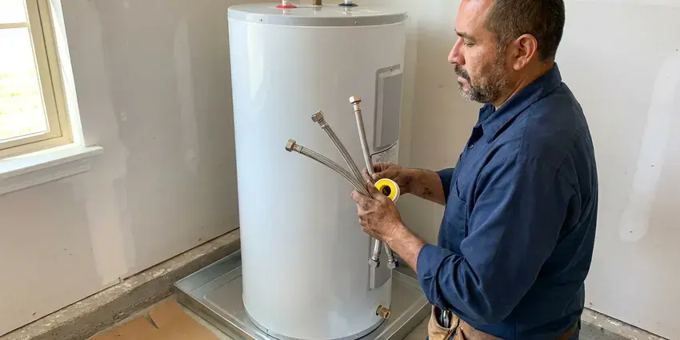

Plumbing Installation in San Marcos, CA
FKM Plumbing offers reliable plumbing installation services throughout San Marcos, CA. We make sure your new systems, from water lines to gas lines, are installed correctly and efficiently.
- Fast, Reliable Installation
- Licensed Southern California Plumbers
- Guaranteed Workmanship
- Fair, Transparent Pricing
Need New Plumbing Installed in San Marcos, CA?
Call FKM Plumbing today for a free estimate on your plumbing installation project.
Licensed Plumbing Installation for Homes and Businesses in San Marcos, CA
FKM Plumbing installs the equipment and piping that keep your home supplied with clean, hot water and safe gas. That includes tank and tankless water heaters, water softeners, PEX repipes, water service lines, gas lines and backflow prevention devices.
Our expertise includes:
- Gas line runs, backflow preventers and expansion tanks
- Sump pump and sewage ejector pump installations.
- Gas line and water line replacements

Additional Plumbing Installation Services in San Marcos, CA
We install water heaters, pumps, lines, and fixtures across San Marcos, CA with careful, permitted work that passes inspection the first time.



San Marcos water heater installation specialists


Customers
Why Choose FKM Plumbing for Plumbing Installation in San Marcos, CA?
We prioritize clear communication and careful workmanship on every installation job. You can count on us for honest advice and solutions tailored to your specific plumbing needs.
- Code Compliant, Every installation meets local plumbing, gas and mechanical code requirements.
- Quality Brands, We install Rheem, A.O. Smith, Bradford White, Navien, Rinnai and other proven brands.
- Local Expertise, Our team understands the specific plumbing challenges and codes in San Marcos, CA.
Citywide Coverage
Our extensive service coverage means that residents throughout San Marcos can access our expert plumbing installation services. We are familiar with the various housing styles and municipal requirements across the area, providing tailored solutions for every home.
Experienced Team
Our team has experience with tank and tankless systems, PEX expansion fittings and gas pipe sizing. They bring that experience to every job, large or small.
Safety-First Approach
Safety and code compliance are paramount in every plumbing installation we undertake. FKM Plumbing adheres strictly to all Southern California and local San Marcos plumbing codes, ensuring your systems are not only efficient but also safe and legal. We conduct thorough inspections to guarantee everything is up to standard.
Trusted Certified San Marcos Plumbing Services Professionals
At FKM Plumbing, we take pride in providing licensed, certified plumbing services throughout San Marcos, CA. Backed by recognized industry credentials, our experienced plumbers combine technical skill with genuine customer care. Whether it is repair, installation, or maintenance, we follow strict safety and quality standards to deliver lasting results you can trust.
Call Us Now PHCC Plumbing Contractor Recognition
PHCC Plumbing Contractor Recognition Better Business Bureau (BBB) Accreditation
Better Business Bureau (BBB) Accreditation Angi Certified Pro
Angi Certified Pro ISO 9001 Quality Management Certification
ISO 9001 Quality Management CertificationDependable Plumbing Installation Services in San Marcos, CA
Backflow Preventer Installation in San Marcos
Backflow preventers are critical for protecting your home's drinking water from contamination, especially for irrigation systems, fire suppression lines, or homes with private wells. FKM Plumbing installs and tests backflow prevention devices in San Marcos to make sure your water supply remains safe and compliant with health codes. We confirm the correct type of device is installed for your specific application and that it is properly maintained and tested annually.

Water Softener Installation in San Marcos, CA
Municipal water across much of Southern California is hard, leaving white scale on faucets, showerheads, and inside water heater tanks. Hard water can damage appliances and leave mineral buildup. FKM Plumbing installs effective water softener systems in San Marcos, CA to protect your plumbing and improve water quality. We test your home's water hardness and usage to recommend the right system, whether it is a salt-based ion exchange or a salt-free conditioner. Proper bypass valve installation and connection to your main water line are essential for easy maintenance and effective operation.
PEX Pipe Installation and Repiping in San Marcos
PEX is flexible, resistant to scale and a popular choice for repiping older homes with failing copper or galvanized pipe. We install PEX with manifold or home-run layouts for balanced pressure. The material handles hard water well and can reduce noise in the walls. We patch access openings neatly or coordinate with your drywall contractor. A PEX repipe can stop repeat pinhole leaks.
Gas Line Installation in San Marcos, CA
Whether you are adding a new gas appliance, converting to natural gas, or need a new line run for an outdoor kitchen, FKM Plumbing provides safe and compliant gas line installation in San Marcos, CA. Our licensed technicians handle everything from sizing the line to trenching, ensuring all connections are leak-free and meet strict local codes. Gas line work requires specialized tools and expertise to prevent dangerous leaks, making professional installation essential for the safety of your home.
Expansion Tank and Sewage Ejector Installs in San Marcos, CA
Water heater expansion tanks absorb thermal expansion in closed systems, which protects pipes and relief valves. Homes with a pressure reducing valve often need one. We also install sewage ejector pumps for basements, guest suites and fixtures below the sewer line. These systems include a sealed basin, check valve and proper venting. Both installations protect your home from costly water damage.
PEX Pipe Installation in San Marcos, CA
PEX piping has become a popular choice for new plumbing installations and repipes in San Marcos, CA due to its flexibility, durability, and resistance to corrosion. FKM Plumbing expertly installs PEX piping for water supply lines, offering a cost-effective and long-lasting alternative to copper. Its ability to expand makes it more resistant to freeze damage than rigid pipe. On an occasional cold night, covering backflow preventers and outdoor valves is usually all it takes to avoid a break. We ensure all connections are secure and leak-free.
Water Heater Installation in San Marcos
FKM Plumbing specializes in installing all types of water heaters, including conventional tank models and advanced tankless units, for homes in San Marcos. We help you select the right size and energy source, gas or electric, to meet your family's hot water demands and budget. Proper venting and connection to existing lines are essential for safety and efficiency, especially with gas units, and our licensed plumbers ensure a clean setup. We also handle the safe disposal of your old unit.

Water Line Installation in San Marcos
Whether you're replacing old, corroded galvanized pipes or installing new water lines for an addition, FKM Plumbing has you covered. We work with various materials like PEX and copper, ensuring durable, leak-free connections. Hard water can lead to mineral buildup, making proper pipe selection and installation important for longevity. Municipal water across much of Southern California is hard, leaving white scale on faucets, showerheads, and inside water heater tanks. We handle everything from the main water service line into your home to individual fixture supply lines, adhering to all local regulations for trenching, backfilling, and pressure testing.
Plumbing Installation Near Me in San Marcos, CA
When you search for "plumbing installation near me" in San Marcos, CA, FKM Plumbing is your trusted local expert. We are deeply familiar with the plumbing infrastructure across the area, allowing us to provide quick and efficient service. Our local presence means we can often offer same-day or next-day appointments for your installation needs.
Our plumbers know local code requirements and inspection schedules. They plan each installation to fit your home's layout and future service needs. You get a clean, professional install from start to finish.
FKM Plumbing at a Glance
- Fully licensed plumbing team covering San Marcos, CA
- Same-day appointments and 24/7 emergency response
- Clear written estimates, no hidden fees
- 4.8-star rated by 754+ Southern California customers
San Marcos Map
San Marcos Information
- Population
- 94,188
- Area codes
- 760/442/951
- Service area
- San Marcos and communities within 40 miles
- Nearby
- Escondido, Vista, Carlsbad, Oceanside
Proper plumbing installation is essential in San Marcos, CA to handle local weather and water quality conditions that can impact pipe longevity. Intense sun breaks down exposed plastic pipe, sprinkler parts, and exterior fittings, so they wear out faster than indoor plumbing.
Expert Services
Trust our professionals for reliable FKM Plumbing solutions in San Marcos, CA.
Our Specialized Plumbing Services in San Marcos, CA
At FKM Plumbing, we provide a complete range of plumbing services across San Marcos, CA. From leak detection to full system installations, our team ensures fast, precise, and affordable service for both residential and commercial properties. Explore our core services below:


How Our Plumbing Installation Process Works in San Marcos, CA
At FKM Plumbing, we make plumbing installation in San Marcos, CA simple and stress-free. Our process is designed for efficiency and clear communication.
Request a Quote
Call (213) 871-0701 or fill out our online form to schedule a consultation. We'll discuss your installation needs and gather all needed details.
On-Site Assessment
Our experienced plumber will visit your San Marcos home to evaluate the project, take measurements, and confirm specific requirements. We'll provide a clear, transparent estimate.
Professional Installation
Our licensed team performs the installation efficiently and carefully, adhering to all codes and safety standards. We test everything thoroughly before completion.
Frequently Asked Questions About Plumbing Installation in San Marcos
The cost of plumbing installation in San Marcos varies widely depending on the type of service. A basic water heater installation might range from $1,200 to $2,500, while a complex gas line installation could be $800 to $3,000 or more. Factors like material costs, labor, and the complexity of the job all influence the final price. We provide written, upfront quotes after an on-site assessment.
Tank water heaters cost less upfront, while tankless units offer endless hot water and can last longer. We help you compare based on household size, fuel type and budget.
Most standard water heater installations, whether tank or tankless, can be completed by FKM Plumbing within 3 to 6 hours. This timeframe can vary based on the complexity of the existing setup, any required modifications to gas or water lines, and if electrical upgrades are needed for electric tankless units.
In San Marcos, most backflow preventers are required to be tested annually by a certified technician to ensure they are functioning correctly. This is essential for maintaining the safety of your public water supply. FKM Plumbing offers convenient annual testing and certification services.
Municipal water across much of Southern California is hard, leaving white scale on faucets, showerheads, and inside water heater tanks. A water softener prevents mineral buildup in pipes and appliances, extending their lifespan and improving efficiency. Softened water also leaves skin and hair feeling cleaner and helps soaps and detergents lather more easily, reducing their usage.
While some minor fixture replacements might seem simple, complex installations like water heaters, gas lines, or repiping should always be handled by a licensed professional. Improper installation can lead to leaks, gas hazards, water damage, and code violations, which can be costly and dangerous. FKM Plumbing ensures safe, compliant work.
We install Rheem, A.O. Smith, Bradford White, Navien, Rinnai, Fleck and other trusted brands. We recommend models based on your home and needs.
You should consider replacing your main water line if you experience consistently low water pressure, recurring leaks, discolored water, or an unusually high water bill that cannot be attributed to other issues. Older homes in San Marcos often have aging galvanized or polybutylene pipes that are prone to failure, making replacement a wise investment.
What People Are Saying About Our Plumbing Experts?

Robert G.
The trenchless sewer replacement saved our front yard. They walked us through the camera inspection footage first so we knew exactly what we were paying for.
Sewer Line Replacement · San Marcos, CAJames P.
Our commercial plumbing system had a leak under the sink, and FKM Plumbing handled it professionally. The plumbers arrived quickly and restored everything without disruption to our customers.
Commercial Plumbing · San Diego, CA
Daniel K.
A pipe burst at 11 pm and they actually answered. The plumber showed up within the hour, shut everything down, and had us back to normal the next morning. Could not ask for more.
Emergency Plumbing · Vista, CA
Mark T.
When our office needed drain cleaning, FKM Plumbing provided quick, reliable service. The plumber arrived on time and made sure every drain flowed perfectly before leaving. Very satisfied.
Drain Cleaning · Vista, CA
Patricia H.
We had a slab leak that two other companies could not find. FKM Plumbing located it in under an hour, explained our options, and the price matched the quote to the dollar.
Slab Leak Repair · Escondido, CA
Sofia M.
Two new toilets installed in one visit, no mess left behind, and the tech even adjusted a faucet he noticed was dripping. Fair pricing and really friendly.
Toilet Installation · Vista, CA